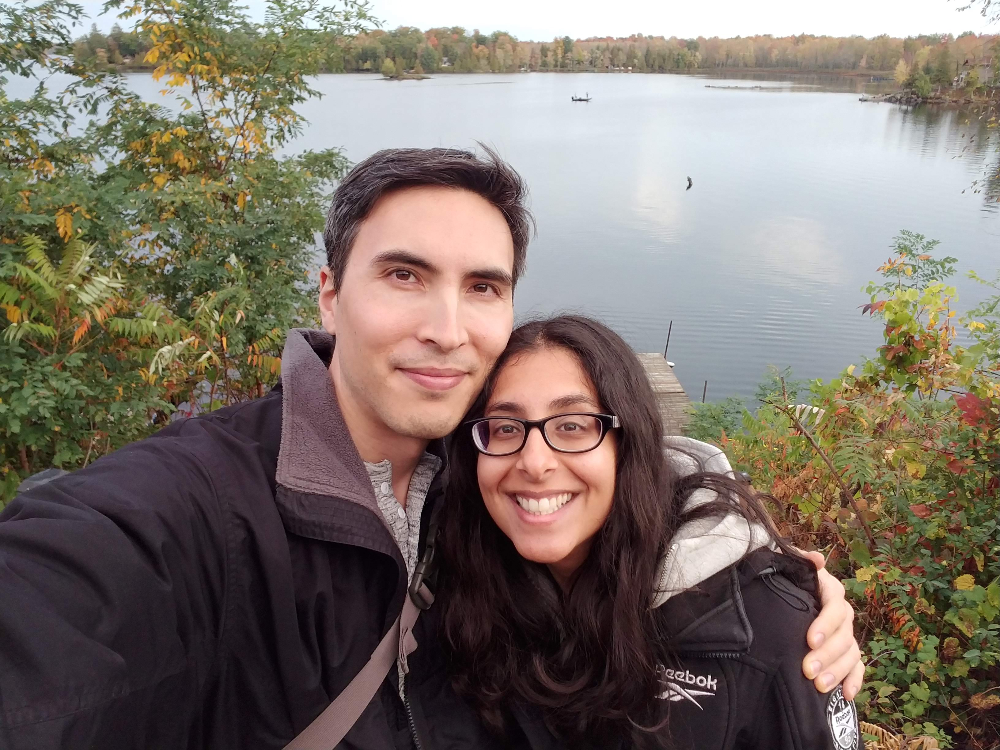

We encourage you to wear whatever you prefer and are comfortable in for the whole time! For the ceremony you may wish to wear something nice, but you could wear sweats, PJs and crocs, or cargo shorts and a blazer, or a Halloween costume. Actually you should definitely wear a Halloween costume.
Alan & Riana's Wedding
September 12-15, 2024 at Long Island Recreational & Conference Centre
About Us
Alan and Riana met online in December 2021. We got engaged on February 14, 2023 and moved into our tiny house on May 10, 2023. If you want to find out more, you'll have to come and hear the song.
As you may know we are quite cost-conscious, and we do not want to impose extra costs on our guests. We also would like to be able to spend quality time with everyone. Given this, we decided to have a weekend getaway at a local camping/cottage resort, with a non-legal ceremony to affirm our commitment to each other.
While we hope to be able to celebrate this special occasion with all of you, we understand if you cannot or prefer not to come. We know that this might not be your idea of a fun time and do not want anyone to feel any obligation to attend, especially if this does not fit well within your schedule, budget or (for those of you not in Ottawa) your travel plans. If this is the case, we hope we can find another time to celebrate with you in the near future!
Event Details
Please view our weekend Welcome Guide (here).
Location
The venue is called Long Island Recreational & Conference Centre (website), and is located on the Rideau River between Manotick and Barrhaven in the south of Ottawa (directions). It is a facility with 14 cabins, around a conference center with two adjacent halls. Each cabin sleeps up to six people and has electricity. There is also a playground, basketball court, fire pit, BBQ pit area, picnic area, and plenty of green space. There are campsite showers and flushing toilets available.
Schedule
Here's the schedule for the weekend, subject to changes due to weather or other unforeseen circumstances. You can come and go as you please.
As we both love games (and Alan especially likes gamifying everything) there will be an ongoing competition spanning much of the weekend, testing the talents of Team Bride vs Team Groom. Activities with an * below indicate those that are part of the competition, and therefore worth points.
Thursday
12-3pm - Setup
3-5:30pm - Guests begin to arrive, settle in, hang out
5:30-7pm - Dinner (including prep time; food will likely be served closer to 6pm)
7pm-bedtime - Activities and late night snacks: board games, movie, music and campfire
Friday
7-10am - Breakfast (at your leisure)
10:45am-12pm - Capture the flag*
12-2pm - Lunch (BBQ) and lawn games
2-5:30pm - Water activities (boat, paddle board, swimming), sports (basketball, volleyball, badminton, soccer), lawn games and board games
3-4pm - Competition game*
5:30-7pm - Dinner (including prep time; food will likely be served closer to 6pm)
7pm-bedtime - Activities and late night snacks: board games, movie (TBD?), music and campfire
Saturday
7-10am - Breakfast (at your leisure)
10am-12pm - Scavenger hunt
12-2pm - Lunch (BBQ) and lawn games
2-4pm - Water activities (boat, paddle board, swimming), sports (basketball, volleyball, badminton, soccer), lawn games and board games
2:30-3:30pm - Competition game*
4-4:30pm - Ceremony preparation
4:30-5pm - Ceremony
5-6pm - Group photo of ALL guests, mingling and drinks
6-8pm - Dinner (catered), slideshow, speeches, dessert
8pm-bedtime - Dancing and karaoke, music, campfire and late night snacks
Sunday
7-10am - Breakfast (at your leisure)
10-11am - Tidy and pack up, organize leftover food
11am - Checkout
Menus
Please note that all food will be vegan, with options for other dietary needs or allergies. Guests are invited to BYOB if they wish; there will be cold storage space available for drinks. *While the menus are mostly finalized, please note that there will be some adjustments as we get closer to September.*
Gifts
We are certain of, and appreciate, everyone's generosity, but we are incredibly fortunate to have everything we need and we would like to kindly request no gifts. Kindly, but firmly, because we know that sometimes couples ask for no gifts but most people give gifts anyway!
We understand that you lovely folks may still wish to contribute somehow, so if that is the case you can help us to make the weekend possible by assisting with making the weekend a success – by helping with meal preparation and cleanup, carpooling, lending out extra sleeping bags and games, picking up supplies we have ordered, and so on.
If you really really insist, we will accept anonymous cash contributions towards the accommodation/food costs (anonymous because we don't want anyone to feel obligated to contribute any specific amount).
If you STILL want to give us a gift, please consider eating one or more vegan meals in our honour, before or after the wedding, OR donating to Animal Charity Evaluators, 80,000 Hours, GiveWell, or Friends of HSI Canada. If you have any questions about these, we would be happy to talk about them!
Dress Code
Photography
We are not hiring a photographer, so feel free to bring your camera or just use your phone and take any pics you'd like! During or after the weekend you can upload them here.
Logistics
Accommodations
At the resort, there are a number of small, rustic (hydro, no running water) cabins available which sleep 6 people (each has 4 single beds (2 bunk beds) and 1 queen bed). There is a limited number of them so we will likely have to share, but we will do our best to group families and friends. There is also the option of tenting for the more adventurous among you. We are able to offer more comfortable accommodations for our more senior guests, please feel free to inquire if this is you.
If you would prefer to sleep off-site, you are welcome to stay at a hotel or AirBnB nearby. Here are some hotels in the area (20 minute drive or less, from the venue):
- Ramada by Wyndham Ottawa On The Rideau (2259 Prince of Wales Dr, Ottawa, ON K2E 6Z8)
- Hilton Garden Inn Ottawa Airport (2400 Alert Rd, Ottawa, ON K1V 1S1)
- Fairfield Inn & Suites by Marriott Ottawa Airport (135 Thad Johnson Private, Ottawa, ON K1V 1A2)
- Hampton Inn & Suites Ottawa West (125 Lusk Street Nepean, Ontario K2J 6S5 Canada)
If you need assistance finding a place to stay off-site, please let us know.
Travel
For those of you coming in from outside of Ottawa, there are three main ways to get to the nation's capital: by car, by train, or by plane. It's a relatively easy drive from Toronto, along the faster Highway 401 route or the more scenic Highway 7 route. The Via Rail stops in Fallowfield, which is a 15-minute drive to the venue. The Ottawa International Airport is about a 20-minute drive to the venue.
Within Ottawa, the options for getting around are driving, cabbing (Uber, Lyft, Blue Line Taxi, and Capital Taxi are all options), or public transit (run by OC Transpo). Once we know who is attending the event, and who can offer or benefit from carpooling, we will make additional arrangements to help everyone get around within Ottawa.
Packing
- Sunscreen and sunglasses
- Hat or visor
- Water bottle
- Bug spray
- Bathing suit
- Flip-flops for showering
- Towel*
- Flashlight or headlamp
- Tent, if camping
- Sleeping bag or sheets/blanket*
- Pillow*
- Camp chair (there is also plenty of seating available at the venue)
- Hammock
- Board games
- Water activities (e.g., paddle board)
- Sports equipment (e.g., basketball, soccer ball)
- Musical instruments (for live music sessions)
- Books
- Earplugs
- Layers, in case of cool weather
- Rain jacket, in case of rain
- Beer, wine, cider, coolers, etc., if desired
*For those travelling by plane or train, we can supply these bulky but important items!
Out-of-Towners
Tourist Activities
For those planning to tour Ottawa, the city has a lot to offer! Here are some of our favourite activities:
- Museums: Ottawa is home to many museums, including the National Gallery of Canada, Canadian Museum of History, Canada Science and Technology Museum, Canada Aviation and Space Museum, Canadian Museum of Nature, Canadian War Museum and Canada Agriculture and Food Museum. For more information, see here.
- Walking tours: If you want to learn about the city's history while exploring downtown on foot, Riana highly recommends Ottawa Free Tours - especially the Capital City Tour.
- Haunted walk: If you prefer a spookier walking tour, you can also do a haunted ghost walk with The Haunted Walk.
- Trails and hiking: One of our favourite things about Ottawa is the plentiful green space and numerous trails for walking, hiking and biking. The National Capital Commission's website lists all local trails and other green spaces maintained by the city. If you would like help planning a hike or outdoor excursion, let us know.
- Parliament: For those interested in history or politics, consider visiting the Parliament of Canada. Tours are offered free-of-charge, but spaces need to be reserved online.
- Supreme Court: For those interested in law or justice, consider visiting the Supreme Court of Canada. Guided tours are offered free of charge, and need to be reserved in advance.
- Royal Canadian Mint: For those interested in coins and medals, you can do a guided tour of one of the mint's two locations (the other being in Winnipeg). Tour tickets can be purchased online.
- The Rideau Canal: This UNESCO World Heritage Site can be visited year-round, and is very picturesque. Learn more here.
- Local theatre: There are several theatres in the city, from the prestigious National Arts Centre to community theatres like Ottawa Little Theatre. If you want to take in a show while in town, see a summary of upcoming shows here.
Must-Try Foods:
- Moo Shu: Hands down the best ice cream in the city.
- Suzy Q or Maverick's: The best donuts in Ottawa.
- Beavertails: Famous pastries in the shape of beavertails, with a variety of toppings.
- Chickpeas: The best falafel and hummus we've ever had, with the most delicious zaatar wedges.
- Wolf Down: Ottawa is known for its shawarma, and Wolf Down is our favourite because of their innovative tofu filling.
- Hareg: We are big fans of Ethiopian food and Hareg has delicious food in addition to being centrally located and owned by lovely folks.
- St. Elsewhere: Ottawa's newest plant-based restaurant is an upscale eatery and bar.
- Astoria Bistro Botanique: A great spot for brunch or dinner on the Gatineau side of the border, if you feel like venturing into nearby Quebec.
If you plan to extend your stay, feel free to let us know so that we can show you around!